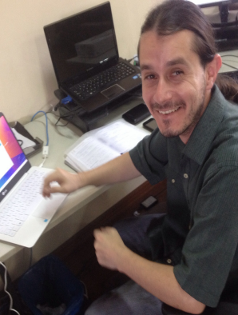

 Sou um curitibano que dedicou boa parte de sua vida aos estudos, e que agora procura conciliar família e trabalho da melhor forma possível. Posso dizer com sinceridade que sou feliz com minha família, minha esposa, minha filha e minha profissão.
Sou formado em Ciência da Computação pela Universidade Federal do Paraná (UFPR). Meu trabalho de conclusão de curso foi na área de Visão Computacional, onde desenvolvi um sistema para rastreamento e armazenamento de histórico de partidas de xadrez utilizando webcams de baixa qualidade.
De 2009 a 2012, trabalhei na empresa Adsistem Sistemas Administrativos, onde me especializei no desenvolvimento de relatórios dos mais variados tipos, incluindo relatórios gerenciais e de BI (Business Intelligence, ou Inteligência de Negócio). Também adquiri um conhecimento profundo em desenvolvimento para bancos de dados e para Web.
Desde 2012 trabalho na empresa Planning Service Transfer Pricing, onde adquiri muita experiência na parte de administração de bancos de dados, administração de redes e servidores Linux, e também como gerente de projetos de desenvolvimento.
Em 2017 fui prestigiado com o Microsoft MVP Award, que reconhece líderes independentes de comunidade, profissionais empenhados que disseminam conhecimento técnico e ajudam pessoas sem esperar nada em troca. Eles compartilham sua paixão excepcional, o conhecimento do mundo real, e conhecimentos técnicos com a comunidade. Me sinto muito honrado por ser considerado um MVP.
Agradeço a Deus e à minha família, sem a qual todas as minhas conquistas técnicas e profissionais teriam sido muito mais difíceis. Minha esposa chama-se Pollyanna, e temos uma filha chamada Alice. A experiência de estar casado e ser pai é impressionante, muito mais valiosa do que qualquer diploma ou reconhecimento profissional. Sou muito grato a toda a paz, todo carinho e todo o amor que essas duas almas me proporcionam todos os dias. E com isso elas me fazem crescer, querer ser cada dia um marido melhor, um pai melhor, e tudo isso acaba se refletindo em como eu sou para a minha profissão e para a própria sociedade.